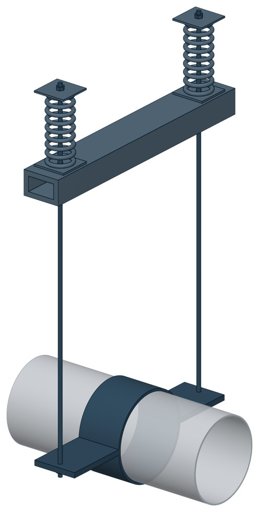

Опоры пружинные подвесные Т41
Серия 4.903-10 вып. 6. Dн 159–1420 мм, вертикальная нагрузка — до 112,78 кН, масса 65–671 кг.

- Диаметр трубы Dн
- 159–1420 мм
- Документ
- Серия 4.903-10 вып. 6
- Исполнений
- 25
- Вертикальная нагрузка
- до 11500 кгс
- Масса
- 65–671 кг
- 3D-модели
- у всех исполнений (условные: общий вид по габаритам)
Таблица исполнений Т41
| Обозначение | Код ПРОМБУРГ | Dнмм | Вертикальная нагрузкакгс | Диаметр тяги dмм | Ширина хомута Вмм | Высота Нмм | Габарит Lмм | Габарит L1мм | Габарит Амм | Массакг | 3D |
|---|---|---|---|---|---|---|---|---|---|---|---|
| Т41.01 | ПБ-Т41-0159-1 | 159 | 1050 | 12 | 100 | 2090 | 850 | 225 | 700 | 65 | 3D |
| Т41.02 | ПБ-Т41-0194-1 | 194 | 1600 | 16 | 160 | 2090 | 900 | 225 | 750 | 88 | 3D |
| Т41.03 | ПБ-Т41-0219-1 | 219 | 2300 | 16 | 160 | 2090 | 970 | 255 | 800 | 114 | 3D |
| Т41.04 | ПБ-Т41-0273-1 | 273 | 3300 | 16 | 160 | 2090 | 1020 | 255 | 850 | 135 | 3D |
| Т41.05 | ПБ-Т41-0325-1 | 325 | 3300 | 16 | 160 | 2090 | 1070 | 255 | 900 | 139 | 3D |
| Т41.06 | ПБ-Т41-0377-1 | 377 | 4000 | 20 | 200 | 2090 | 1170 | 255 | 1000 | 189 | 3D |
| Т41.07 | ПБ-Т41-0426-1 | 426 | 5300 | 20 | 200 | 2090 | 1300 | 310 | 1100 | 250 | 3D |
| Т41.08 | ПБ-Т41-0480-1 | 480 | 4000 | 20 | 200 | 2090 | 1310 | 264 | 1100 | 199 | 3D |
| Т41.09 | ПБ-Т41-0480-2 | 480 | 8000 | 24 | 260 | 2110 | 1360 | 310 | 1150 | 391 | 3D |
| Т41.10 | ПБ-Т41-0530-1 | 530 | 5300 | 20 | 200 | 2090 | 1400 | 310 | 1200 | 262 | 3D |
| Т41.11 | ПБ-Т41-0530-2 | 530 | 9500 | 30 | 260 | 2120 | 1410 | 340 | 1200 | 461 | 3D |
| Т41.12 | ПБ-Т41-0630-1 | 630 | 6500 | 24 | 200 | 2110 | 1410 | 310 | 1200 | 337 | 3D |
| Т41.13 | ПБ-Т41-0630-2 | 630 | 11500 | 30 | 200 | 2140 | 1450 | 370 | 1200 | 513 | 3D |
| Т41.14 | ПБ-Т41-0720-1 | 720 | 6500 | 24 | 200 | 2110 | 1460 | 310 | 1250 | 344 | 3D |
| Т41.15 | ПБ-Т41-0720-2 | 720 | 11500 | 30 | 260 | 2140 | 1550 | 370 | 1300 | 556 | 3D |
| Т41.16 | ПБ-Т41-0820-1 | 820 | 6500 | 24 | 200 | 2110 | 1560 | 310 | 1350 | 353 | 3D |
| Т41.17 | ПБ-Т41-0820-2 | 820 | 11500 | 30 | 260 | 2140 | 1600 | 370 | 1350 | 568 | 3D |
| Т41.18 | ПБ-Т41-0920-1 | 920 | 6500 | 24 | 200 | 2110 | 1660 | 310 | 1400 | 366 | 3D |
| Т41.19 | ПБ-Т41-0920-2 | 920 | 11500 | 30 | 260 | 2140 | 1760 | 370 | 1500 | 596 | 3D |
| Т41.20 | ПБ-Т41-1020-1 | 1020 | 6500 | 24 | 200 | 2110 | 1810 | 310 | 1600 | 380 | 3D |
| Т41.21 | ПБ-Т41-1020-2 | 1020 | 11500 | 30 | 260 | 2140 | 1850 | 370 | 1600 | 611 | 3D |
| Т41.22 | ПБ-Т41-1220-1 | 1220 | 6500 | 24 | 200 | 2110 | 2010 | 310 | 1800 | 383 | 3D |
| Т41.23 | ПБ-Т41-1220-2 | 1220 | 11500 | 30 | 260 | 2140 | 2050 | 370 | 1800 | 616 | 3D |
| Т41.24 | ПБ-Т41-1420-1 | 1420 | 6500 | 24 | 200 | 2110 | 2110 | 310 | 1900 | 411 | 3D |
| Т41.25 | ПБ-Т41-1420-2 | 1420 | 11500 | 30 | 260 | 2140 | 2250 | 370 | 2000 | 671 | 3D |
Чтобы заказать, сообщите обозначение и код ПРОМБУРГ: +7 (499) 325-51-35, promburg@yandex.ru.
Нормативные документы
- Серия 4.903-10 вып. 6 Изделия и детали трубопроводов для тепловых сетей. Выпуск 6. Опоры трубопроводов подвесные (жесткие и пружинные) — документ, по которому изготавливается изделие — Не действует с 01.01.1997. Заменён: Серия 5.903-13 вып. 6-95. Изделие изготавливается по прежнему обозначению.
Связанные позиции
- Соседний тип: Т29 — Опоры пружинные подвесные
На трубу Dн 159–1420 мм в каталоге
Позиции каталога с исполнениями на те же наружные диаметры трубы.
Детали трубопровода
- Фланец стальной плоский приварной общих Dн: 15
- Фланец стальной воротниковый общих Dн: 14
- Отвод стальной крутоизогнутый 90° общих Dн: 12
- Отвод стальной крутоизогнутый 90°, 09Г2С общих Dн: 10
- Днище стальное эллиптическое общих Dн: 9
- Заглушка стальная эллиптическая общих Dн: 8
- Переход стальной концентрический общих Dн: 7
- Отвод нержавеющий 90° общих Dн: 1
Компенсаторы
- Компенсатор сильфонный КСО общих Dн: 14
- Компенсатор сильфонный КСОФ общих Dн: 14
- Компенсатор сильфонный стартовый СК общих Dн: 14
- Компенсатор сильфонный 2ОПКР общих Dн: 13
- Компенсатор сильфонный 2ОПКР (ИЯНШ) 2ОПКРИ общих Dн: 13
- Компенсатор сильфонный 2СКУ.М 2СКУМ общих Dн: 13
- Компенсатор сильфонный 2СКУ.М (ИЯНШ) 2СКУМИ общих Dн: 13
- Компенсатор сильфонный 2СКУ.ППМ (ИЯНШ) 2СКУППМИ общих Dн: 13
- Компенсатор сильфонный КС общих Dн: 13
- Компенсатор сильфонный КСО (ИЯНШ) КСОИ общих Dн: 13
- Компенсатор сильфонный ОПКР общих Dн: 13
- Компенсатор сильфонный ОПКР (ИЯНШ) ОПКРИ общих Dн: 13
- Компенсатор сильфонный сейсмический общих Dн: 13
- Компенсатор сильфонный СКУ.М СКУМ общих Dн: 13
И ещё 20 типов — в оглавлении каталога.
Другие опоры и подвески
- Опора скользящая хомутовая ТС-626 общих Dн: 16
- Опорные плиты диэлектрические ТС-632 общих Dн: 16
- Опоры приварные неподвижные скользящие ОПН общих Dн: 16
- Опора скользящая приварная ТС-624 общих Dн: 15
- Опора катковая двухъярусная ТС-628 общих Dн: 15
- Хомутовые опоры СК 2109-92 общих Dн: 15
- Балки опорные с проушинами ОСТ 24-125-121-01 общих Dн: 15
- Балки опорные для пружин ОСТ 24-125-124-01 общих Dн: 15
- Опора неподвижная двухупорная ТС-660 общих Dн: 14
- Опора неподвижная четырёхупорная ТС-661 общих Dн: 14
И ещё 94 типа — в оглавлении каталога.
Другие типы раздела
Подвески и блоки пружинные (Т26…Т42)
- Опоры жесткие подвесные пружинные Т26
- Опоры жесткие подвесные пружинные, блоки Т27
- Опоры пружинные подвесные Т28
- Опоры пружинные подвесные Т29
- Разгружающие устройства для блоков пружин Т42
Частые вопросы
По какому диаметру подбирать — Dн или Ду?
По наружному диаметру трубы Dн: именно он стоит в таблицах серии. Ду — условный проход, округлённая величина: Ду 100 соответствует Dн 108. В заявке указывайте Dн и толщину стенки трубы.
В старом проекте нагрузка в тс, а здесь в кН. Как сравнить?
Серия 4.903-10 даёт нагрузки в тонна-силах, серия 5.903-13 — в килоньютонах. 1 тс = 9,81 кН, то есть 10 тс — это около 98 кН. В таблицах каталога переключатель единиц пересчитывает значения.
Из какой стали изготавливаются опоры?
По рабочим чертежам серии листовые детали — Ст3сп5 ГОСТ 14637-89, хомуты из круга — сталь 20 ГОСТ 1050-88. Для районов с низкой расчётной температурой воздуха применяется низколегированная сталь, в том числе 09Г2С; размеры опор при этом не меняются. В заявке укажите расчётную температуру наружного воздуха.
Почему часть поверхностей опоры не окрашена?
Поверхности под приварку к трубе и к несущей конструкции оставляют без краски, иначе шов получится некачественным. Их консервируют смазкой, которую снимают перед сваркой.
Что указать в заявке, чтобы получить цену без уточнений?
Обозначение с номером исполнения или код ПБ, количество, Dн и стенку трубы, расчётную температуру наружного воздуха, покрытие, город доставки и желаемый срок. Кнопка «В заявку» в таблице собирает спецификацию, которую можно выгрузить в Excel или отправить письмом.